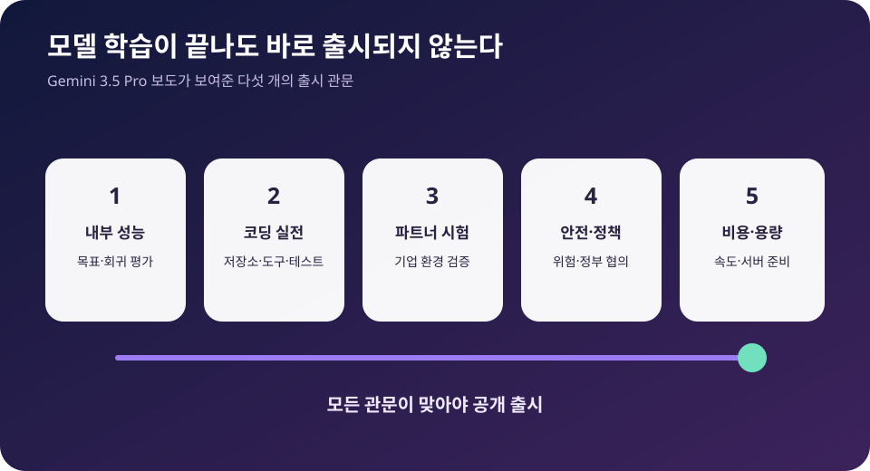

Gemini 3.5 Pro 출시 지연 보도: Google이 코딩 성능에 시간을 더 쓰는 이유
Google의 차세대 최상위 모델 Gemini 3.5 Pro가 내부 목표에 미치지 못해 계획보다 몇 달 늦어졌다는 보도가 나왔다. 특히 코딩 능력을 더 끌어올리는 데 시간이 걸리는 것으로 전해졌다. Google은 지연을 공식 인정하지 않았지만 3.5 Pro와 업그레이드된 Flash 모델을 파트너들과 시험 중이라고 밝혔다. 이제 최상위 AI 경쟁의 병목은 발표 속도보다 긴 작업을 실제로 끝내는 능력과 출시 전 검증으로 이동하고 있다.
Reported Delay
확인된 것은 “테스트 중”, 지연 기간과 내부 성능은 보도에 기반한다
Reuters는 Bloomberg를 인용해 Gemini 3.5 Pro가 일정에서 수개월 뒤처졌다고 전했다. Google은 Reuters에 해당 모델과 개선된 Flash를 파트너와 시험하고 있으며 미국 정부와도 협의 중이라고 답했다. 정확한 출시일, 내부 점수, 지연 원인은 공식 문서로 공개되지 않았다.

보도와 Google 답변을 나눠서 보면
Bloomberg의 취재 내용은 Google이 Gemini 3.5 Pro의 내부 목표를 맞추지 못했고, 특히 코딩 능력을 개선하기 위해 출시를 늦췄다는 것이다. 이는 익명의 소식통에 기반한 보도이며 Google이 구체적인 목표와 결과를 공개한 것은 아니다.
Google의 공식 답변은 모델이 파트너 테스트 단계에 있다는 점을 확인한다. 3.5 Pro와 개선된 Flash가 함께 언급됐고, 미국 정부와 생산적인 협의를 진행 중이라고 설명했다. 회사는 “출시 취소”나 “모델 실패”라는 해석과는 거리를 뒀다.
따라서 현시점의 가장 정확한 표현은 “공식 출시일이 발표되지 않은 Gemini 3.5 Pro가 내부·외부 테스트를 계속하고 있으며, 복수 보도는 당초 계획보다 늦어졌다고 전한다”다. 모델이 존재하지 않거나 개발이 중단됐다고 볼 근거는 없다.
왜 코딩 성능이 출시를 좌우하나
최상위 모델의 주된 경쟁장이 일반 챗봇에서 업무 실행으로 바뀌었다. 개발자는 한두 줄 코드를 묻는 데서 끝나지 않고, 저장소를 읽고 여러 파일을 수정하고 테스트를 실행하며 오류를 고치는 긴 작업을 모델에 맡긴다.
이런 작업은 정답형 벤치마크보다 어렵다. 기존 코드 규칙을 지켜야 하고, 도구 호출이 실패하면 원인을 찾아 다시 시도해야 하며, 잘못된 수정이 다른 기능을 깨뜨리지 않는지 확인해야 한다. 모델의 추론, 메모리, 도구 사용, 비용, 속도가 동시에 시험된다.
Google은 Gemini를 Android와 Workspace, Cloud, 개발자 API에 연결한다. 코딩 모델이 불안정하면 단순한 답변 오류보다 피해가 크다. 기업 저장소의 코드가 잘못 수정되거나 에이전트가 장시간 잘못된 방향으로 작업하면 고객 신뢰와 비용에 직접 영향을 준다.
경쟁사의 기준도 높아졌다. OpenAI, Anthropic, xAI뿐 아니라 Cursor 같은 코딩 제품이 모델을 빠르게 교체하며 실제 개발 흐름을 최적화한다. Google은 벤치마크 점수뿐 아니라 개발자가 체감하는 작업 성공률과 도구 생태계를 맞춰야 한다.
플래그십 모델 출시는 왜 점점 느려지나
모델 규모가 커질수록 학습이 끝난 뒤의 작업이 늘어난다. 사실성, 유해 사용, 사이버 능력, 생물안보, 개인정보, 저작권, 지역별 규제, 서버 비용을 평가해야 한다. 한 영역을 개선한 후 다른 능력이 떨어지는 회귀도 확인해야 한다.
파트너 테스트는 공개 벤치마크가 놓치는 문제를 찾는다. 기업 고객은 실제 문서와 코드, 권한 체계, 보안 도구 안에서 모델을 사용한다. 이 과정에서 응답 지연, 긴 문맥 오류, 도구 호출 실패, 과도한 비용이 발견되면 모델이나 제품 계층을 다시 조정해야 한다.
정부 협의도 새 변수다. 최상위 모델이 강한 사이버·과학 능력을 갖게 되면서 기업은 출시 전에 국가안보 당국과 정보를 공유하거나 접근 조건을 논의한다. 기술팀의 준비가 끝나도 정책 결정이 맞지 않으면 공개 범위가 달라질 수 있다.
추론비 역시 중요하다. 성능이 좋아도 요청 한 건을 처리하는 비용이 너무 높으면 무료 제품이나 대규모 Workspace 고객에게 제공하기 어렵다. Pro 모델의 품질과 Flash 모델의 속도·가격을 함께 맞추는 이유다.
Google에는 왜 더 큰 문제인가
Gemini는 하나의 앱이 아니라 Google 전체 제품의 공통 엔진이다. Search의 AI 응답, Gmail과 Docs의 작성 지원, Android의 비서, Google Cloud의 Vertex AI, 개발자용 API가 같은 모델군의 품질과 일정에 영향을 받는다.
지연이 길어지면 경쟁사가 개발자와 기업 고객을 먼저 확보한다. API를 다른 모델에 맞춰 구축한 회사는 성능이 조금 좋아졌다는 이유만으로 쉽게 옮기지 않는다. 데이터 연결, 평가, 프롬프트, 보안 심사를 다시 해야 하기 때문이다. 출시 속도는 생태계 점유율과 연결된다.
반대로 Google에는 강한 배포망이 있다. Android, Chrome, Search, Workspace, Cloud에 모델을 넣을 수 있고 자체 TPU 인프라도 갖췄다. 몇 달 늦더라도 비용과 안정성, 통합 경험에서 확실한 차이를 만들면 빠르게 사용자를 확보할 수 있다.
시장 반응을 어떻게 읽어야 하나
MarketWatch와 Investor's Business Daily는 보도 뒤 Alphabet 주가 약세와 AI 경쟁 우려를 연결했다. 투자자는 Google의 막대한 AI 지출이 언제 검색, 클라우드, 구독 매출로 돌아오는지 본다. 플래그십 일정 지연은 투자 회수 시점을 늦출 수 있다는 불안을 키운다.
그러나 하루의 주가 움직임을 모델 품질의 증거로 쓰면 안 된다. 같은 날 시장 금리, 반도체 매도, 경쟁사 발표 등 여러 요인이 주가에 영향을 준다. 실제 판단은 출시된 모델의 품질, 가격, 고객 증가, Cloud 매출에서 해야 한다.
개발자와 기업 사용자가 볼 지점
아직 공개되지 않은 모델을 기다리며 현재 시스템을 멈출 필요는 없다. 실제 업무를 기준으로 Gemini의 현행 모델과 경쟁 모델을 평가하고, 새 버전이 나오면 같은 테스트 세트로 다시 비교하는 방식이 가장 현실적이다.
코딩에서는 단일 문제 점수보다 저장소 수정 성공률, 테스트 통과율, 리뷰에서 발견된 오류, 완료까지 사용한 토큰과 시간을 기록해야 한다. 장문 업무에서는 필요한 근거를 정확히 찾는지, 도구 권한을 지키는지, 중단 뒤 이어서 작업할 수 있는지를 봐야 한다.
Google Cloud 고객은 모델 출시일과 별도로 데이터 위치, 가격, 서비스 수준, 이전 버전 지원기간을 확인해야 한다. 플래그십 모델 교체가 기존 자동화의 결과를 바꿀 수 있으므로 버전 고정과 회귀 테스트가 필요하다.
앞으로 확인할 세 가지
첫째는 Google의 공식 출시일과 모델 카드다. 내부 목표 미달 보도가 맞았는지보다 최종 모델이 어떤 성능과 안전평가를 공개하는지가 중요하다. 둘째는 3.5 Pro와 Flash의 역할 분담, 셋째는 실제 코딩 에이전트에서의 독립 평가다.
특히 공개 직후의 데모보다 몇 주 동안 누적된 개발자 결과를 봐야 한다. 장시간 작업 중 오류율, 컨텍스트 유지, 비용, 서버 혼잡이 드러나야 실사용 수준을 판단할 수 있다.
내가 보는 핵심
이 보도를 Google의 패배로 단정하는 것은 이르다. 오히려 플래그십 AI 출시가 이제 모델 학습 완료만으로 끝나지 않는다는 사실을 보여준다. 코딩 실전성, 파트너 환경, 안전과 정책, 추론비가 동시에 맞아야 한다.
다만 Google에는 시간이 무한하지 않다. 늦은 출시가 더 나은 제품으로 이어지면 검증의 가치가 증명된다. 늦었는데도 실제 업무에서 차별점이 없다면 강한 배포망만으로 개발자 신뢰를 되찾기 어려울 것이다. 출시일보다 출시 후 한 달의 사용 결과가 더 중요한 이유다.
Comments
댓글